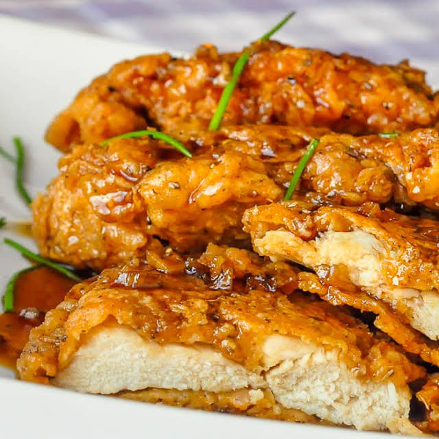

Double Crunch Honey Garlic Chicken Breasts

Do these honey garlic chicken breasts look good or what? That was rhetorical, of course they do.
Ingredients
- 4 chicken thighs
- 2 cups flour
- 4 tsp salt
- 4 tsp black pepper
- 3 tbsp ground ginger
- 1 tbsp ground nutmeg
- 2 tsp ground thyme
- 2 tsp ground sage
- 1 tsp cayenne pepper
- 2 tbsp paprika
- 4 eggs
- 8 tbsp water
- 2 tbsp olive oil
- 4 cloves minced garlic
- 1 cup honey
- 1/4 cup soy sauce
- 1 tsp ground black pepper
- canola oil
Steps
- Place the chicken breasts between 2 sheets of plastic wrap and using a meat mallet, pound the meat to an even 1/2 inch
thickness. Alternatively, you can slice the breasts by placing them flat on a cutting board and using a very sharp knife
to slice them into halves horizontally.
- Sift together the flour, salt, black pepper, ground ginger, nutmeg, thyme, sage paprika and cayenne pepper. NOTE: This
flour and spice dredge mix is sufficient for two batches of this chicken recipe so divide the batch and store 1/2 in a
Ziploc bag in the freezer. I always like to make enough for next time...and there's always a next time with this recipe.
- Make an egg wash by whisking together the eggs and water.
- Season the chicken breasts with salt and pepper, then dip the meat in the flour and spice mixture. Dip the breast into
the eggwash and then a final time into the flour and spice mix, pressing the mix into the meat to get good contact.
- Heat a skillet on the stove with about a half inch of canola oil covering the bottom. You will want to carefully
regulate the temperature here so that the chicken does not brown too quickly. The thinness of the breast meat
practically guarantees that it will be fully cooked by the time the outside is browned. I find just below medium heat
works well. I use a burner setting of about 4 1/2 out of 10 on the dial and fry them gently for about 4 or 5 minutes per
side until golden brown and crispy.
- Drain on a wire rack for a couple of minutes before dipping the cooked breasts into the Honey Garlic Sauce. Serve with
noodles or rice.
- In a medium saucepan add the 2 tbsp olive oil and minced garlic. Cook over medium heat to soften the garlic but do not
let it brown.
- Add the honey, soy sauce and black pepper.
- Simmer together for 5-10 minutes, remove from heat and allow to cool for a few minutes. Watch this carefully as it
simmers because it can foam up over the pot very easily.
Home Page